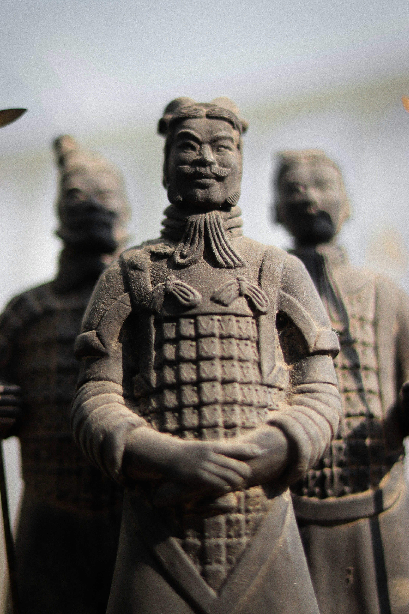
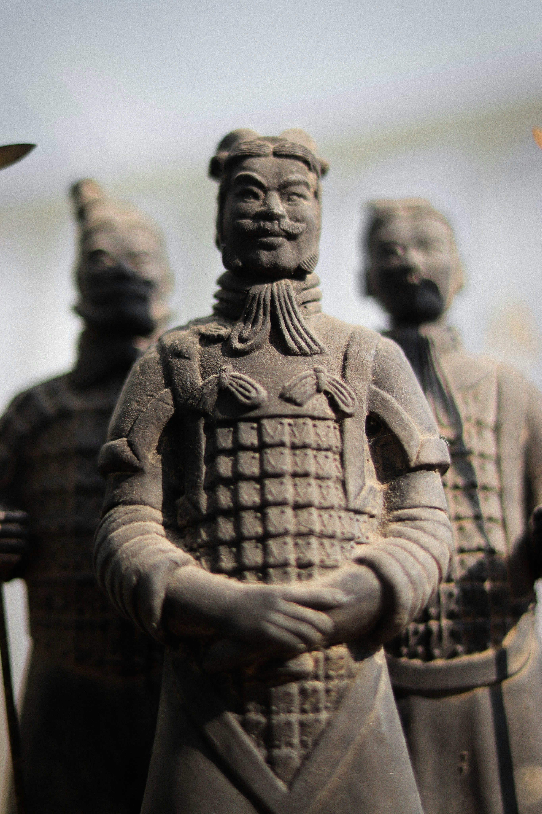

Terracotta Army

About the Monument
The Terracotta Army is a massive collection of life-sized terracotta sculptures depicting the armies of Qin Shi Huang, the first Emperor of China. Discovered by local farmers in 1974, the site is located in the Lintong District of Xi'an. This "underground army" was buried with the emperor in 210-209 BCE with the purpose of protecting him in his afterlife. It is part of a much larger necropolis that is believed to be a miniature recreation of the Emperor's imperial palace.
History
The army consists of more than 8,000 soldiers, 130 chariots with 520 horses, and 150 cavalry horses. What makes this monument truly extraordinary is the level of detail: every single soldier has unique facial features, hairstyles, and expressions. Archaeologists have found that the figures were originally painted in bright colors, though most of the pigment faded quickly after being exposed to the air during excavation. The site provides invaluable insight into the military technology, dress, and artistic standards of ancient China during the Qin Dynasty.
Gallery
 
